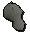

")
Fremennik'sches Rüstzeug
Einführung | Sammeln der nötigen Gegenstände | Herstellung von Felskrabben-Rüstzeug | Herstellung von Dornenrüstzeug | Herstellung von Wallasalki-Rüstzeug
Herstellen des Rüstzeugs | Werte von Felskrabbenrüstzeug | Werte von Dornenrüstzeug | Werte von Wallasalki-Rüstung
Herstellen des Rüstzeugs | Werte von Felskrabbenrüstzeug | Werte von Dornenrüstzeug | Werte von Wallasalki-Rüstung
Einführung
Nur RuneScape-Mitglieder können fremenniksches Rüstzeug tragen. Bitte werdet Mitglied, damit ihr auf dieses Feature zugreifen könnt.
![[Bild]](../../img/main/kbase/npc/misc/jarvald.gif) Erst mal ist es wichtig, dass ihr das Abenteuer 'Die Fremennik'schen Proben' abschließt. Es kann zwar jeder die Monster töten, um an die Gegenstände zu kommen, die man für die Herstellung von fremennikschem Rüstzeug benötigt, aber nur Mitglieder des Clans selbst können es sich anfertigen lassen.
Erst mal ist es wichtig, dass ihr das Abenteuer 'Die Fremennik'schen Proben' abschließt. Es kann zwar jeder die Monster töten, um an die Gegenstände zu kommen, die man für die Herstellung von fremennikschem Rüstzeug benötigt, aber nur Mitglieder des Clans selbst können es sich anfertigen lassen.Die Waterbirth-Insel kann nur auf dem Schiffsweg erreicht werden. Um dort hinzukommen, müsst ihr mit Jarvald auf dem westlichen Dock in Rellekka sprechen.
Jarvald bringt auch Leute zur Waterbirth-Insel, die kein Mitglied des Fremennik-Clans sind - alle sind willkommen, sich auf diesen gefährlichen Weg zu machen.

Wenn ihr euch auf der Insel befindet, wird er auf euch an dem auf der Karte markierten Ort warten. Sprecht einfach noch mal mit ihm, um nach Rellekka zurückzureisen.
Wie man die nötigen Gegenstände erhält
Um das Rüstzeug herstellen zu lassen, benötigt ihr bestimmte Gegenstände, die ihr von den verschiedenen Monstern auf (bzw. unter) der Insel erhaltet. Wenn ihr euch ins Hinterland der Insel begebt, findet ihr eine Leiter, die nach unten führt. Diese Leiter ist der Eingang zu den Höhlen der Waterbirth-Insel - je tiefer ihr in sie vordringt, desto näher kommt ihr an hochstufige (und gefährliche) Monster heran. Damit erhöht sich natürlich auch die Chance, dass ihr sterbt, also geht nicht weiter, als das Risiko es euch wert ist. Wenn ihr die erste Leiter am Eingang herabgestiegen seid, befindet ihr euch in einem großen Verlies, von dem aus drei Türen in Höhlen mit verschiedenen Monstern führen.

Um durch die Türen hindurchzukommen, werden zwei Spieler benötigt, die sich auf die zwei 'Druckplatten' auf dem Boden stellen müssen. Dadurch wird sich die Tür öffnen. Von innen könnt ihr die Tür allein öffnen.
Jedes der drei Monster lässt die Teile fallen, die ihr für die Herstellung dieses speziellen Rüstzeugs braucht. Im Folgenden wird beschrieben, was ihr von jedem der Monster braucht und welches Rüstzeug ihr daraus anfertigen könnt.
Dagannoth-Haut bekommt ihr, wenn ihr normale Dagannoths im ersten Raum besiegt.
Felskrabben-Rüstzeug
Alles, was ihr braucht, um dieses Rüstzeug herzustellen, wird von den Riesenfelskrabben in dem markierten Raum (siehe Karte oben) fallen gelassen. Wenn ihr alle Stücke und die benötigte Summe Goldmünzen beisammen habt, müsst ihr zu Skulgrimen in Rellekka gehen, der euch den gewünschten Teil des Rüstzeugs anfertigen wird.
| Teil des Rüstzeugs | Benötigte Gegenstände | |||||
![[Bild]](../../img/main/kbase/armour/melee/rockshellhelm.gif) Felskrabben-Helm |
![[Bild]](../../img/main/kbase/guides/waterbirth_armour/dagannoth_hide.gif) Dagannoth-Haut |
x1 | ![[Bild]](../../img/main/kbase/guides/waterbirth_armour/melee_headchunk.gif) Krustenstück |
x1 | ![[Bild]](../../img/main/kbase/items/misc/coins.gif) Goldmünzen |
x 5.000 |
![[Bild]](../../img/main/kbase/armour/melee/rockshellplate.gif) Felskrabben-Panzer |
Dagannoth-Haut |
x3 | ![[Bild]](../../img/main/kbase/guides/waterbirth_armour/melee_bodyshard.gif) Krustenscherbe |
x1 | Goldmünzen |
x 10.000 |
![[Bild]](../../img/main/kbase/armour/melee/rockshelllegs.gif) Felskrabben-Beinlinge |
Dagannoth-Haut |
x2 | ![[Bild]](../../img/main/kbase/guides/waterbirth_armour/melee_legsplinter.gif) Krustensplitter |
x1 | Goldmünzen |
x 7.500 |
![[Bild]](../../img/main/kbase/armour/melee/rockshellboots.gif) Außer den Gegenständen, die ihr benötigt, um die Grundlage für Felskrabben-Rüstzeug zu bekommen, lassen die Felskrabben noch zwei weitere Gegenstände fallen, die euren Satz Rüstzeug ergänzen: die Handschuhe und die Stiefel.
Außer den Gegenständen, die ihr benötigt, um die Grundlage für Felskrabben-Rüstzeug zu bekommen, lassen die Felskrabben noch zwei weitere Gegenstände fallen, die euren Satz Rüstzeug ergänzen: die Handschuhe und die Stiefel.
Dagannoth-Dornenrüstzeug
Alles, was ihr braucht, um dieses Rüstzeug herzustellen, wird von den Dagannoths in dem markierten Raum (siehe Karte oben) fallen gelassen. Wenn ihr alle Stücke und die benötigte Summe Goldmünzen beisammen habt, müsst ihr zu Sigli dem Jäger in Rellekka gehen, der euch den gewünschten Teil des Rüstzeugs anfertigen wird.
| Teil des Rüstzeugs | Benötigte Gegenstände | |||||
![[Bild]](../../img/main/kbase/armour/ranged/spined_helm.gif) Dagannoth-Helm |
Dagannoth-Haut |
x1 | ![[Bild]](../../img/main/kbase/guides/waterbirth_armour/ranged_headcircular.gif) Kreisförmige Haut |
x1 | Goldmünzen |
x 5.000 |
![[Bild]](../../img/main/kbase/armour/ranged/spined_body.gif) Dagannoth-Harnisch |
Dagannoth-Haut |
x3 |  Flache Haut |
x1 | Goldmünzen |
x 10.000 |
![[Bild]](../../img/main/kbase/armour/ranged/spined_chaps.gif) Dagannoth-Beinlinge |
Dagannoth-Haut |
x2 | ![[Bild]](../../img/main/kbase/guides/waterbirth_armour/ranged_bodystretched.gif) Gespannte Haut |
x1 | Goldmünzen |
x 7.500 |
![[Bild]](../../img/main/kbase/armour/ranged/spined_boots.gif) Außer den Gegenständen, die ihr benötigt, um die Grundlage für Dagannoth-Dornenrüstzeug zu bekommen, lassen die Dagannoths noch zwei weitere Gegenstände fallen, die euren Satz Dornenrüstzeug ergänzen: die Handschuhe und die Stiefel.
Außer den Gegenständen, die ihr benötigt, um die Grundlage für Dagannoth-Dornenrüstzeug zu bekommen, lassen die Dagannoths noch zwei weitere Gegenstände fallen, die euren Satz Dornenrüstzeug ergänzen: die Handschuhe und die Stiefel.
Wallasalki-Rüstzeug
Alles, was ihr braucht, um dieses Rüstzeug herzustellen, wird von den Wallasalkis in dem markierten Raum (siehe Karte oben) fallen gelassen. Wenn ihr alle Stücke und die benötigte Summe Goldmünzen beisammen habt, müsst ihr zu Peer dem Seher in Rellekka gehen, der euch den gewünschten Teil des Rüstzeugs anfertigen wird.
| Teil des Rüstzeugs | Benötigte Gegenstände | |||||
![[Bild]](../../img/main/kbase/armour/mage/skeletalhat.gif) Wallasalki-Helm |
Dagannoth-Haut |
x1 | ![[Bild]](../../img/main/kbase/guides/waterbirth_armour/mage_headskull.gif) Beschädigter Totenschädel |
x1 | Goldmünzen |
x 5.000 |
![[Bild]](../../img/main/kbase/armour/mage/skeletalplate.gif) Wallasalki-Oberteil |
Dagannoth-Haut |
x3 | ![[Bild]](../../img/main/kbase/guides/waterbirth_armour/mage_bodyribs.gif) Beschädigter Brustkorb |
x1 | Goldmünzen |
x 10.000 |
![[Bild]](../../img/main/kbase/armour/mage/skeletallegs.gif) Wallasalki-Unterteil |
Dagannoth-Haut |
x2 | ![[Bild]](../../img/main/kbase/guides/waterbirth_armour/mage_legfibula.gif) Wadenbeinknochen |
x1 | Goldmünzen |
x 7.500 |
![[Bild]](../../img/main/kbase/armour/mage/skeletalboots.gif) Außer den Gegenständen, die ihr benötigt, um die Grundlage für Wallasalki-Rüstzeug zu bekommen, lassen die Wallasalkis noch zwei weitere Gegenstände fallen, die euren Satz Rüstzeug ergänzen: die Handschuhe und die Stiefel.
Außer den Gegenständen, die ihr benötigt, um die Grundlage für Wallasalki-Rüstzeug zu bekommen, lassen die Wallasalkis noch zwei weitere Gegenstände fallen, die euren Satz Rüstzeug ergänzen: die Handschuhe und die Stiefel.
Das Anfertigen des Rüstzeugs

Für die oben aufgeführten Kosten und Gegenstände könnt ihr euch euer Rüstzeug anfertigen lassen, die euch dann die im Folgenden aufgelisteten Boni verleihen.
Werte von Felskrabben-Rüstzeug
| Gegenstand | Benötigte Stufe |
||||||||||||||||||
| Angriffsboni | Verteidigungsboni | Sonstiges | |||||||||||||||||
![[Bild: Stechen]](../../img/main/kbase/table_text/stab1.gif "Stechen") |
![[Bild: Schlitzen]](../../img/main/kbase/table_text/slash1.gif "Schlitzen") |
![[Bild: Schmettern]](../../img/main/kbase/table_text/crush1.gif "Schmettern") |
![[image: Magie]](../../img/main/kbase/table_text/magic1.gif "Magie") |
![[Bild: Fernkampf]](../../img/main/kbase/table_text/range1.gif "Fernkampf") |
|
|
|
|
|
![[Bild: Beschwörung]](../../img/main/kbase/table_text/summoning1.gif "Beschwörung") |
![[Bild: Stärke]](../../img/main/kbase/table_text/strength1.gif "Stärke") |
![[Bild: Gebet]](../../img/main/kbase/table_text/prayer1.gif "Gebet") |
|||||||
Felskrabben-Helm |
40 |
+ 0 | + 0 | + 0 | - 6 | - 2 | + 30 | + 32 | + 27 | - 1 | + 30 | + 6 | + 0 | + 0 | |||||
Felskrabben-Panzer |
40 |
+ 0 | + 0 | + 0 | - 30 | - 10 | + 82 | + 80 | + 72 | - 6 | + 80 | + 30 | + 0 | + 0 | |||||
Felskrabben-Beinlinge |
40 |
+ 0 | + 0 | + 0 | - 21 | - 7 | + 51 | + 49 | + 47 | - 4 | + 49 | + 10 | + 0 | + 0 | |||||
![[Bild]](../../img/main/kbase/armour/melee/rockshellgloves.gif) Felskrabben-Handschuhe |
40 |
+ 0 | + 0 | + 0 | + 0 | + 0 | + 0 | + 1 | + 2 | + 0 | + 0 | + 0 | + 0 | + 0 | |||||
Felskrabben-Stiefel |
40 |
+ 0 | + 0 | + 0 | + 0 | + 0 | + 0 | + 1 | + 1 | + 0 | + 0 | + 1 | + 0 | + 0 | |||||
Werte von Dagannoth-Dornenrüstzeug
| Gegenstand | Benötigte Stufe |
||||||||||||||||||
| Angriffsboni | Verteidigungsboni | Sonstiges | |||||||||||||||||
|
|
|
|
|
|
|
|
|
|
|
|
|
|||||||
Dagannoth-Helm |
40 40 |
- 6 | - 6 | - 6 | - 6 | + 6 | + 6 | + 6 | + 6 | + 6 | + 0 | + 6 | + 0 | + 0 | |||||
Dagannoth-Harnisch |
40 40 |
+ 0 | + 0 | + 0 | - 15 | + 15 | + 40 | + 32 | + 45 | + 20 | + 40 | + 30 | + 0 | + 0 | |||||
Dagannoth-Beinlinge |
40 40 |
+ 0 | + 0 | + 0 | - 10 | + 8 | + 22 | + 16 | + 24 | + 8 | + 22 | + 10 | + 0 | + 0 | |||||
![[Bild]](../../img/main/kbase/armour/ranged/spined_gloves.gif) Dagannoth-Handschuhe |
40 40 |
+ 0 | + 0 | + 0 | + 0 | + 0 | + 1 | + 2 | + 0 | + 0 | + 0 | + 0 | + 0 | + 0 | |||||
Dagannoth-Stiefel |
40 40 |
+ 0 | + 0 | + 0 | + 0 | + 0 | + 1 | + 1 | + 0 | + 0 | + 0 | + 1 | + 0 | + 0 | |||||
Werte von Wallasalki-Rüstzeug
| Gegenstand | Benötigte Stufe |
||||||||||||||||||
| Angriffsboni | Verteidigungsboni | Sonstiges | |||||||||||||||||
|
|
|
|
|
|
|
|
|
|
|
|
|
|||||||
Wallasalki-Helm |
40 40 |
+ 0 | + 0 | + 0 | + 2 | - 2 | + 10 | + 9 | + 11 | + 3 | + 0 | + 6 | + 0 | + 0 | |||||
Wallasalki-Oberteil |
40 40 |
+ 0 | + 0 | + 0 | + 8 | - 10 | + 35 | + 25 | + 42 | + 15 | + 0 | + 30 | + 0 | + 0 | |||||
Wallasalki-Unterteil |
40 40 |
+ 0 | + 0 | + 0 | + 6 | - 7 | + 22 | + 20 | + 24 | + 10 | + 0 | + 10 | + 0 | + 0 | |||||
![[Bild]](../../img/main/kbase/armour/mage/lightmystictop.gif) Wallasalki-Handschuhe |
40 40 |
+ 0 | + 0 | + 0 | + 0 | + 0 | + 0 | + 1 | + 2 | + 0 | + 0 | + 0 | + 0 | + 0 | |||||
Wallasalki-Stiefel |
40 40 |
+ 0 | + 0 | + 0 | + 0 | + 0 | + 0 | + 1 | + 1 | + 0 | + 0 | + 1 | + 0 | + 0 | |||||

Weitere Artikel in Diverse Anleitungen
|
|
|
Weiterführende Informationen Wenn euch dieser Artikel nicht weitergeholfen hat, könnt ihr in den folgenden Kapiteln der RuneScape-Webseite mehr Informationen finden:
|
|